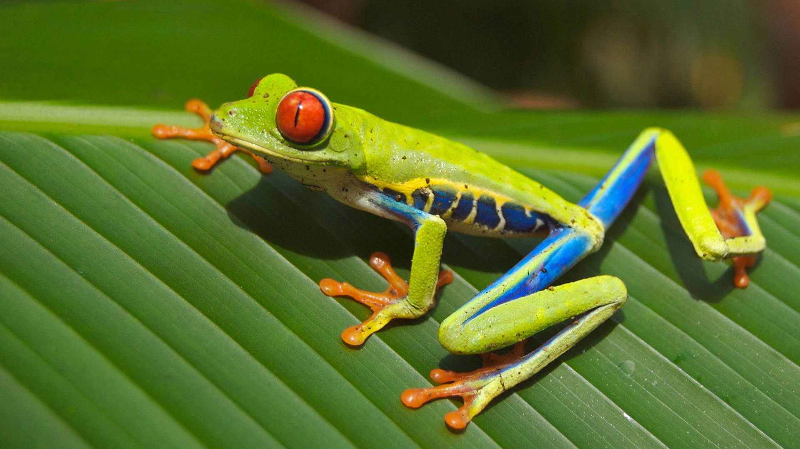

Newest Post
"Unveiling the Enigmatic Black Rain Frog: A Marvel of South African Amphibian Adaptation"

In the hidden corners of the southwestern coastal regions of South Africa resides a truly captivating amphibian—the Black Rain Frog (Breviceps fuscus). Endearingly rotund and adorned with a deep brown to almost black hue, this species has become a focal point of fascination for both amphibian enthusiasts and casual observers alike.
The Black Rain Frog's unique adaptation to its environment is nothing short of remarkable. Preferring a subterranean lifestyle, these frogs spend the majority of their time burrowed beneath the moist soils of the native fynbos and forest habitats. Their burrows serve as protective shelters against the region's harsh climate, showcasing their incredible ability to adapt to the challenges of their surroundings.
During the rainy season, a pivotal time for breeding, the Black Rain Frog emerges from its concealed abode. Its distinct vocalization, a deep and resonant call reminiscent of a distant chainsaw, becomes a chorus that echoes through the South African landscape. This captivating behavior is not only a testament to their unique breeding rituals but also a reminder of the intricacies and adaptability of amphibian life.
As a biologist, encountering the Black Rain Frog is a vivid reminder of the biodiversity that graces our planet. These resilient creatures, with their charming appearance and distinctive behaviors, contribute to the rich ecological tapestry of their habitats. In the face of ongoing conservation challenges, the Black Rain Frog stands as a symbol of the importance of preserving and understanding the diverse array of life that defines our natural world.
First Post
Step into the enchanting world of frogs, where nature's vibrant palette comes alive in the most unexpected places. From the tropical rainforests to serene ponds, these remarkable amphibians captivate with their diversity and unique behaviors.
As we delve into the exploration of frogs, let's unravel the secrets of their croaks, the intricacies of their vibrant skin patterns, and the ecological significance they hold. Each species tells a story of adaptation and survival, showcasing the beauty of evolution in the amphibian kingdom.
Whether it's the acrobatic leaps of the tree frogs or the hypnotic calls of the chorus, the world of frogs is filled with wonders waiting to be discovered. Join me on this journey into the fascinating realm of these small yet extraordinary creatures.
Stay tuned for more posts on different frog species, their habitats, and the crucial role they play in maintaining the delicate balance of our ecosystems. Happy hopping!
